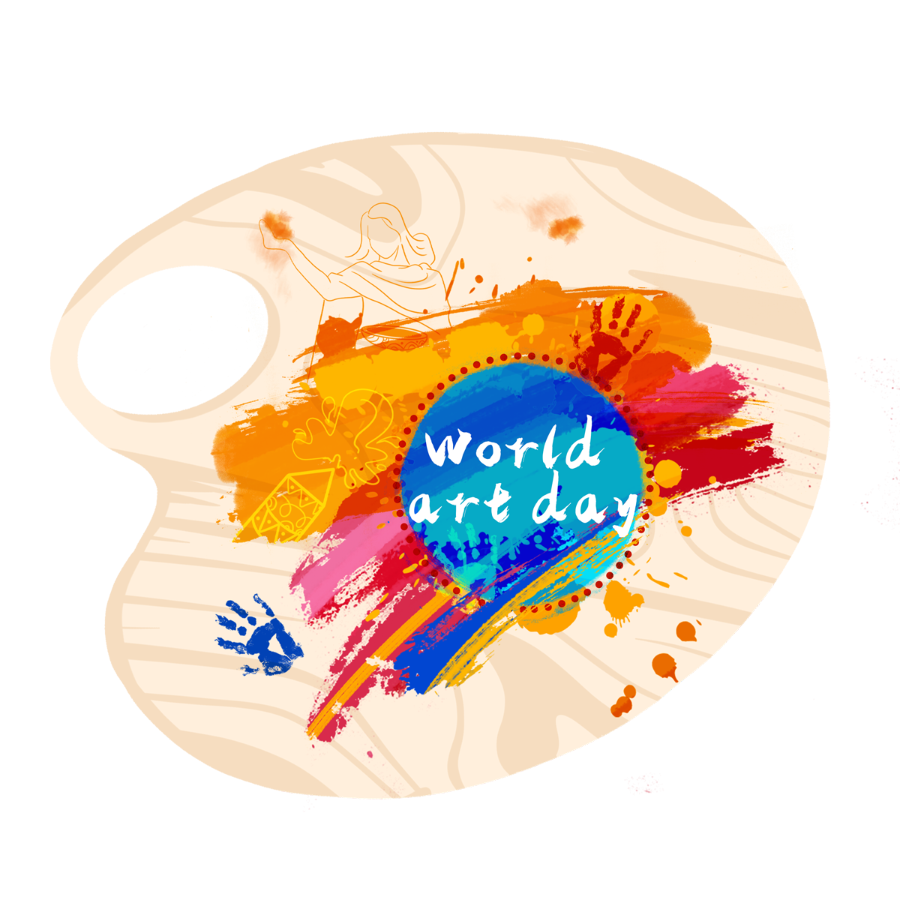
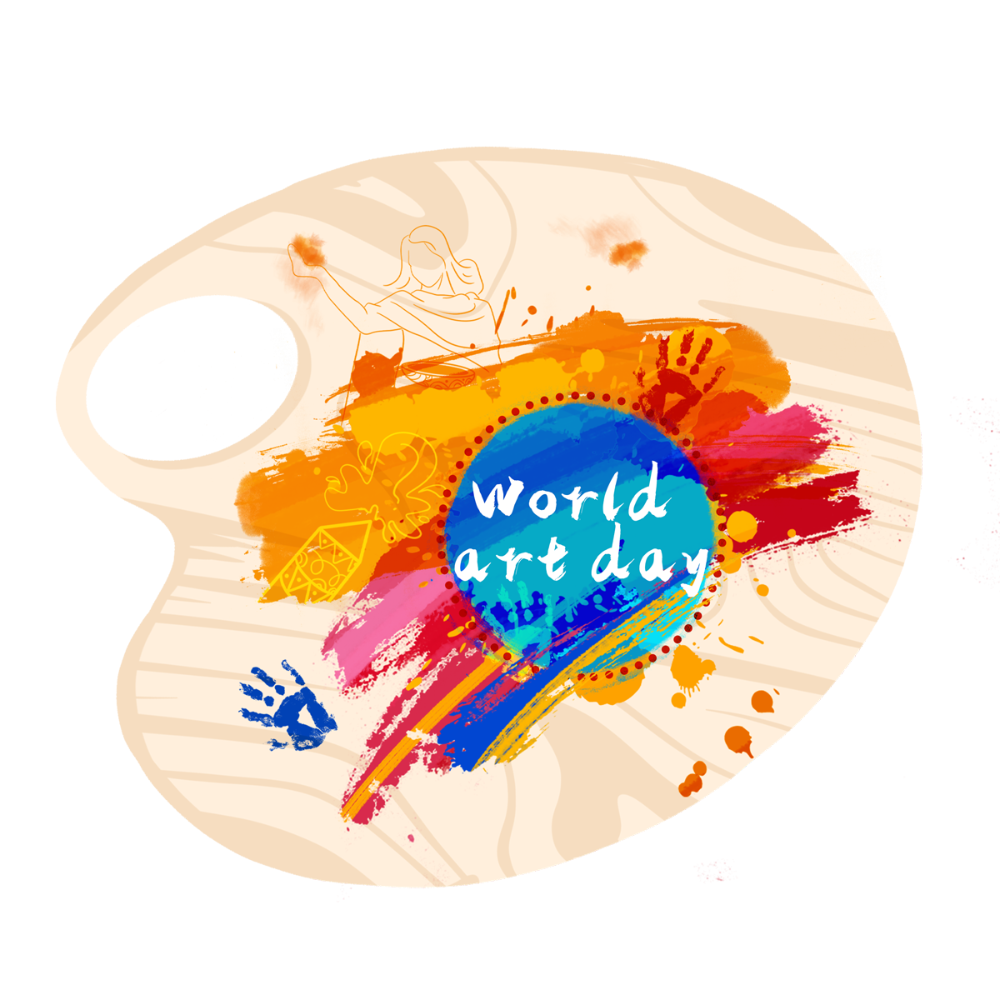

Cosas que me hacen feliz

Cosas que me hacen feliz
- Me gusta todo lo que se hable de arte, pintura, felpas,
cada vez que veo un diseño, creando un paisaje, letras o
cualquier otra cosa, se prende mi botón de la curiosidad,
lo creo con éxito.
- Me encanta la fotografía, no más bien,
la disfruto en especial los paisajes naturales, lo que el ojo humano no alcanza ver,
lo enfoco para tener mejor visión de la creación de mi padre celestial,
Jehová Dios (Romanos 1:20)
- Me gusta la musica, vivo la música y hasta la bailo.
Y si en un futuro tengo la oportunidad de aprender a
tocar unos de mis instrumento favorito, como el Piano, la Guitarra,
lo haré.
 
